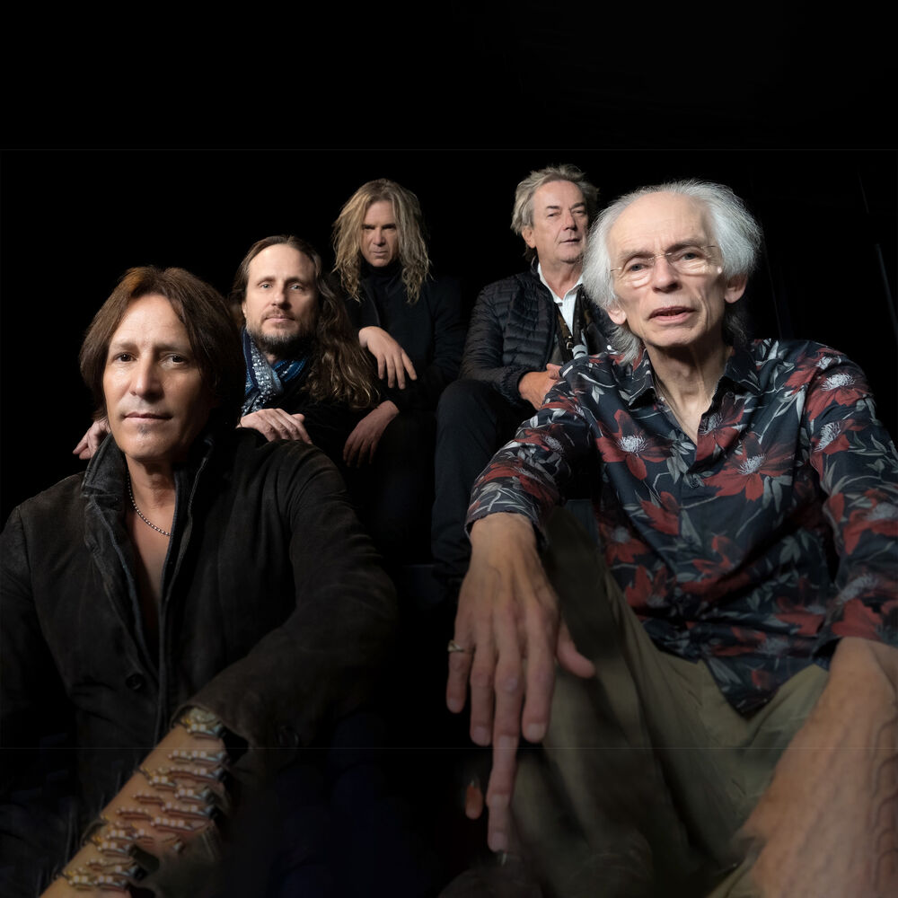
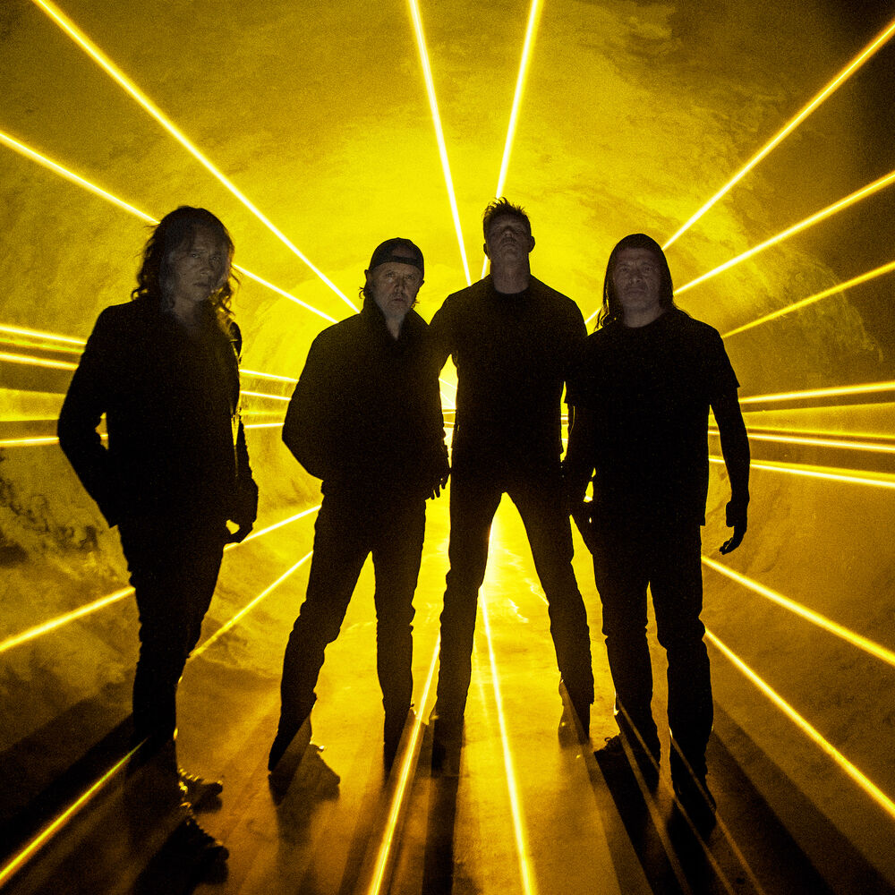
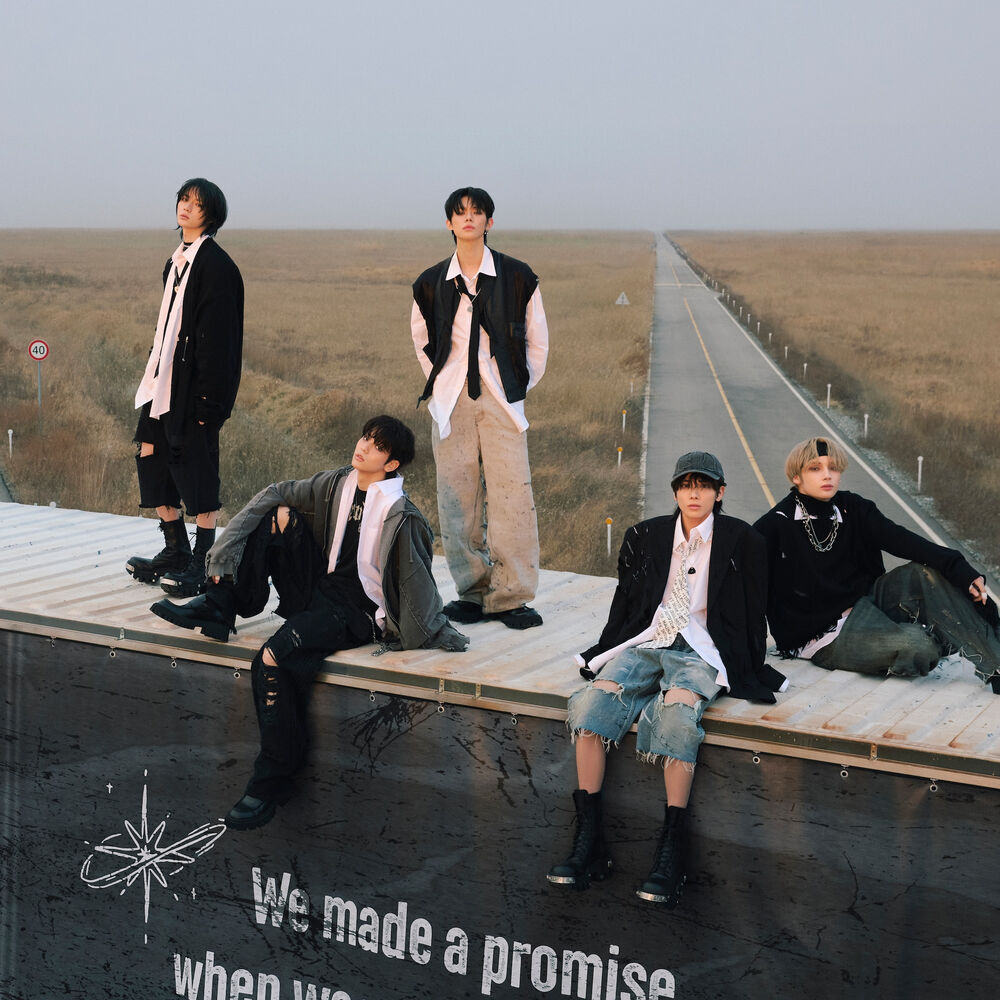

Client Milestones
| Artist / Client | Event | Original Date | Type | Anniversary |
|---|---|---|---|---|
| Yes | Chris Squire born | Mar 4, 1948 | BDAY | 78 yrs |
| Metallica | Jason Newsted born | Mar 4, 1964 | BDAY | 62 yrs |
| Paul McCartney | The Beatles - Yesterday | Mar 4, 1966 | EP | 60 yrs |
| Frank Zappa | Mothers of Invention - We're Only In It For The Money album released | Mar 4, 1968 | ALBUM | 58 yrs |
| Modest Mouse | Jeremiah Green (Former) born | Mar 4, 77 | BDAY | 49 yrs |
| Jimi Hendrix | People, Hell and Angels - UK Release | Mar 4, 2013 | ALBUM | 13 yrs |
| ATO Records | Drive-By Truckers "English Oceans" album releasd | Mar 4, 2014 | ALBUM | 12 yrs |
| Drive-By Truckers | English Oceans album released | Mar 4, 2014 | ALBUM | 12 yrs |
| Loretta Lynn | Full Circle album released | Mar 4, 2016 | ALBUM | 10 yrs |
| Ray LaMontagne | Ouroboros album released | Mar 4, 2016 | ALBUM | 10 yrs |
| TXT | The Dream Chapter: STAR album released | Mar 4, 19 | ALBUM | 7 yrs |
| SHINee | I Wanna Be (Key Solo) album released | Mar 4, 19 | ALBUM | 7 yrs |
More
Artists — click for details

Yes

Metallica

Paul McCartney

Frank Zappa

Modest Mouse

Jimi Hendrix
A
ATO Records

Drive-By Truckers

Loretta Lynn

Ray LaMontagne

TXT
SHINee